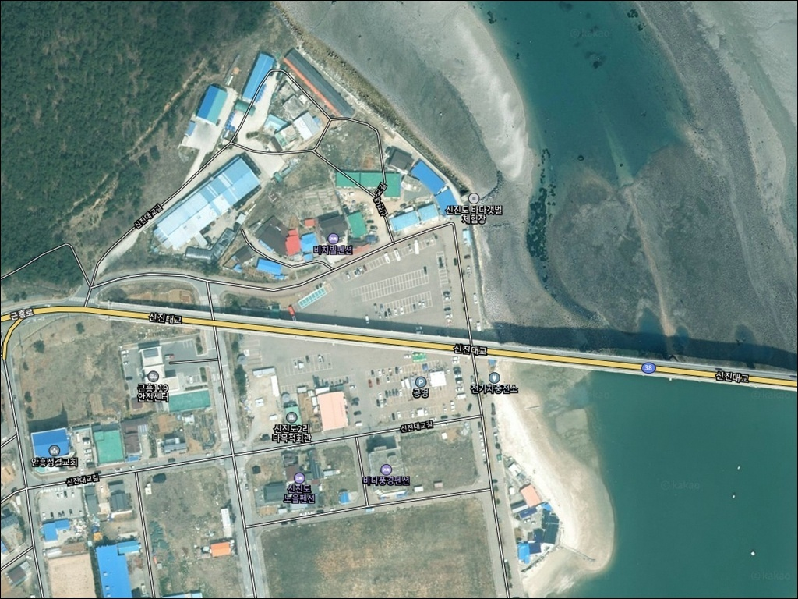
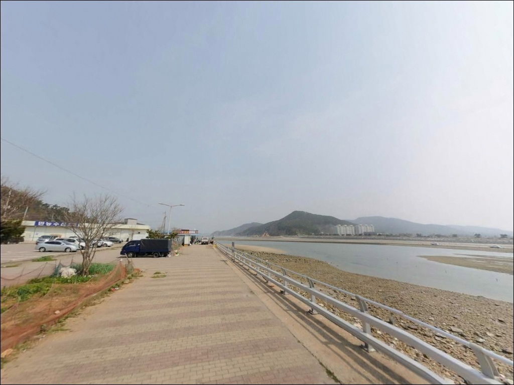
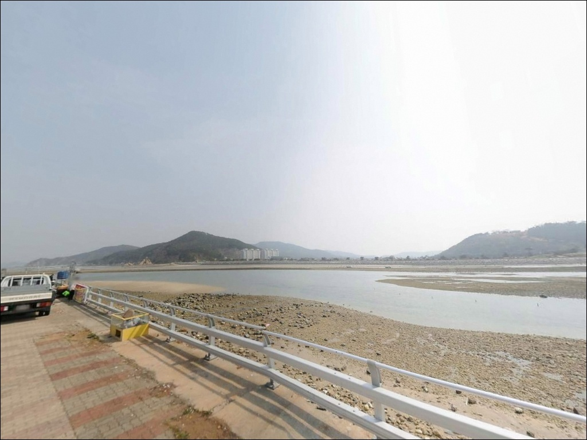
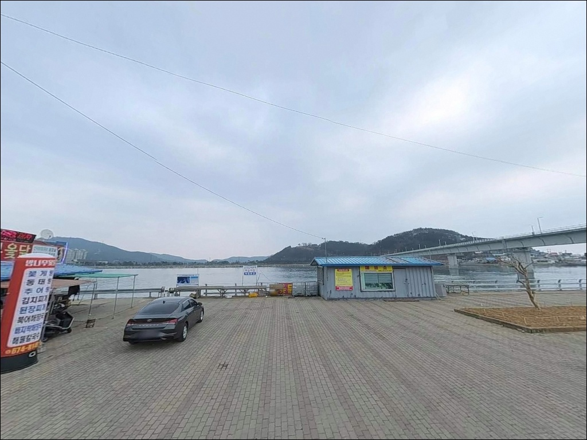
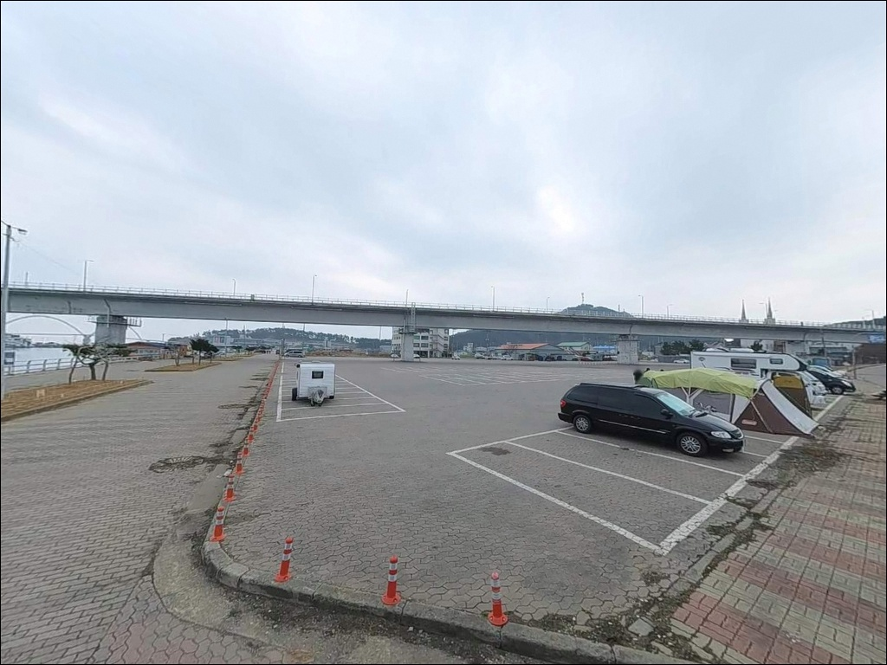
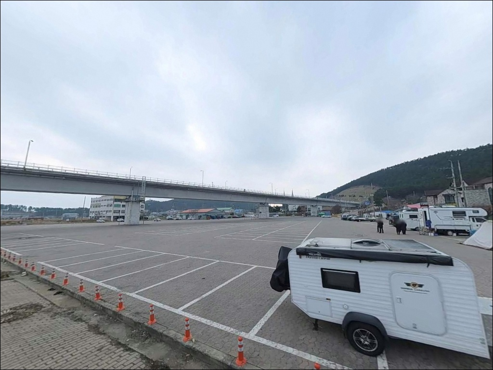
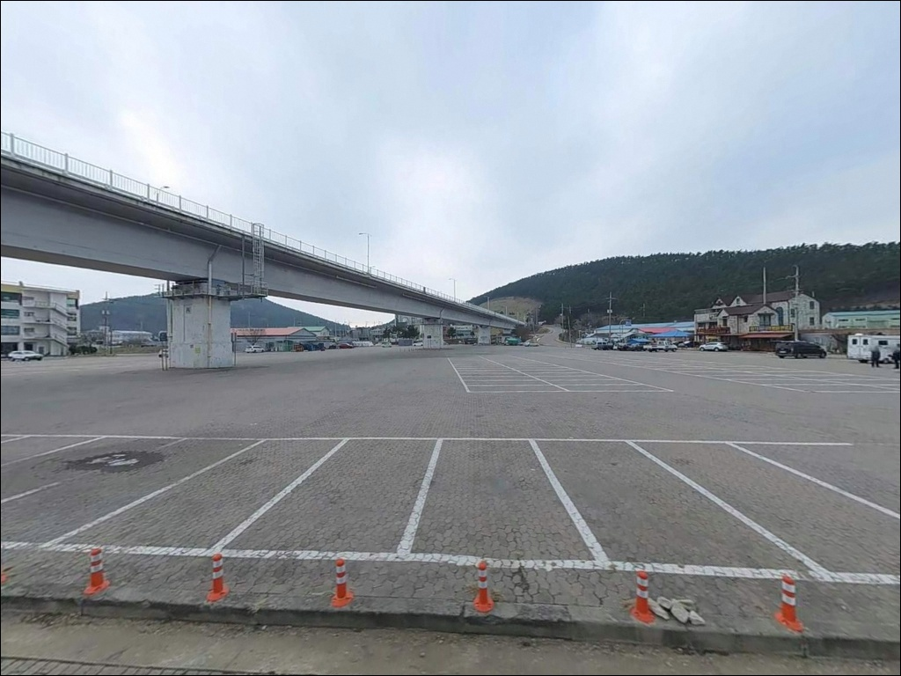
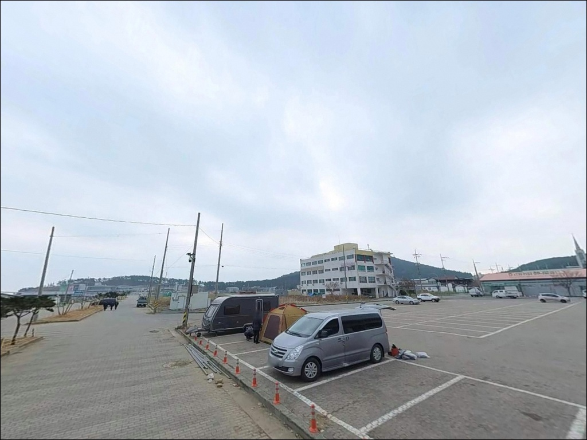
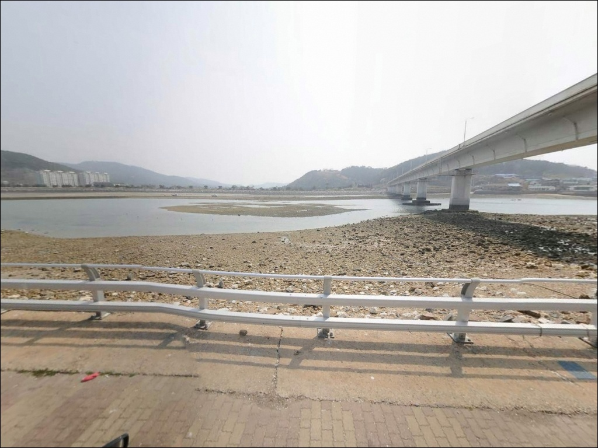

이 페이지에는 광고(제휴 링크 포함)가 있으며, 광고 링크를 통해 구매하면 운영자가 판매 수익 또는 수수료를 받을 수 있습니다. 포인트 사진: 카카오맵 스카이뷰·로드뷰. 이 페이지의 지도·사진 이미지는 카카오맵의 실제 서비스 이미지와 다를 수 있습니다.

신진도공영주차장
충남 태안군 근흥면 신진도리 253
신진도공영주차장은 내항 석축과 외항 방파제를
모두 도보권에서 이동할 수 있는 거리에 두고 있어
선택지가 다양한 구조이지만,
어느 구간에 자리를 잡느냐에 따라
조류 흐름과 수심이 달라지는 포인트입니다.
내항 쪽과 외항 방파제 끝단은
서로 다른 낚시 스타일에 맞는 조건을 만들어내므로,
진입 전에 어떤 방식으로 낚시할지를
먼저 정해두는 것이 방문 성패를 결정합니다.
이 글은 신진도공영주차장 일대의
진입 여건, 낚시 자리별 특성,
물때 대응 판단 기준, 차박 체류 조건에 집중합니다.
조황 단정이나 특정 어종 보장은
이 글의 범위에 포함되지 않습니다.

신진도는 신진대교로 충남 태안군 본토와 연결된 섬으로,
서해안고속도로 서산 나들목에서 태안 방면으로 이동한 뒤
안흥 방향을 경유해 신진대교를 건너면
섬 안쪽까지 포장도로를 통해 진입할 수 있습니다.
신진대교를 넘어 주차장까지 이어지는 도로는
편도 2차선 이상의 포장 상태로
급경사나 비포장 구간 없이 연결됩니다.
신진도공영주차장은 국가어항인 신진항 인근에 위치한
대규모 공영 노외주차장으로, 무료로 운영됩니다.
주차 공간이 넉넉해 캠핑카와 대형 SUV도
회차에 어려움이 없는 구성입니다.
주차 후 내항 석축까지는 걸어서 바로 접근이 가능하고,
외항 방파제 방향으로도
도보로 이동 가능한 거리에 낚시 자리가 형성됩니다.
다만 성수기 주말에는 관광·낚시 차량이 집중되어
이른 시간 도착이 자리 확보를 용이하게 합니다.
주차 후 어선 이동 동선을 확인하고
조업 차량 통행에 방해가 되지 않는 자리를
먼저 선점하는 것이 기본 매너입니다.

신진도항은 국가어항으로 지정된 항구로,
가로등과 항구 조명이 갖춰진 환경입니다.
야간에도 어선 출입과 작업 차량 이동이 이어지는 구조이므로,
완전히 조용한 차박 환경을 기대하기는 어려운 곳입니다.
항구 특성상 프라이버시 확보도 제한적인 편입니다.
선상낚시 출조 업체들이 밀집해 있어
새벽 이른 시간부터 낚시인 유동이 있는 지역입니다.
낚시를 마친 뒤 잠깐 쉬어가는 용도나
새벽 출조를 앞두고 하룻밤 대기하는 방식으로는
실용적인 체류가 가능한 곳입니다.
조용한 취침 환경이 우선이라면
항구 중심부에서 벗어난 외곽 포구를
대안으로 검토하는 편이 현실적입니다.
서해 특성상 바람 방향과 세기가 빠르게 변할 수 있어
기상청 해양예보를 출발 당일 아침에 다시 확인하는 것이
체류 계획 조정에 도움이 됩니다.
야간에 외항 방향으로 이동하면
조명이 없는 구간도 있으므로
헤드랜턴은 기본 장비로 챙겨야 합니다.

신진도는 충청남도 공식 관광지로 등록된 섬으로,
수산시장, 횟집, 식당가가 항구 인근에 밀집해 있습니다.
주차장 도보 거리 안에 수산물 시장이 있어
현장에서 생미끼를 구하거나 간단한 식사를 해결하기에
외딴 포인트에 비해 인프라 접근성이 높은 편입니다.
다만 개별 영업점의 운영 여부는 방문 전 확인이 필요합니다.
공중화장실이 인근에 설치되어 있고,
근흥119안전센터가 가까운 거리에 위치해
응급 상황 대응 시간이 짧은 편입니다.
대형 의료시설은 태안읍 방향으로 이동해야 하므로
비상약품과 응급 연락처는 출발 전 챙기는 것이 기본입니다.
낚시 장비를 추가로 구할 필요가 생길 경우
신진도 내 낚시 관련 상가를 이용하거나
안흥항 방향 인근 상가를 활용하는 동선이
현실적인 대안이 됩니다.

신진도공영주차장 방문 전 가장 먼저 확인해야 할 것은
물때입니다.
바다타임에서 근흥면 기준 물때를 미리 확인하고,
사리 전후에는 외항 방파제 끝단 운용이
어려울 수 있음을 판단해 두는 것이 출조 전 기본 전략입니다.
서해는 조수간만차가 크게 형성되는 해역입니다.
간조 시 수심이 크게 낮아지는 구간이 생길 수 있어
같은 자리에서도 물때에 따라 여건이 달라집니다.
기상청 해양예보에서 풍속·풍향·파고를 확인하고,
출발 당일 아침에 한 번 더 확인하는 것이
헛걸음을 막는 가장 기본적인 절차입니다.
방파제 낚시 시 구명조끼 착용은 반드시 필요합니다.
테트라포드 구간은 출입을 삼가는 것이 안전합니다.
어선 출입항 시에는 낚싯줄을 즉시 회수하고,
어민 조업 동선에 방해가 되지 않도록
자리를 잡는 것이 기본 매너입니다.
출조 전 최신 조황은
"신진도 낚시 조황" 또는 "태안 신진도 방파제 낚시" 등의
키워드로 검색해 미리 파악해 두는 것을 권장합니다.

신진도항은 외항과 내항 구조가 뚜렷하게 구분된 항만 형태입니다.
신진대교 인근 수역은 섬과 육지 사이를 잇는
협수로 성격으로 조류 흐름이 뚜렷하게 형성됩니다.
대형 어선이 드나드는 항구 특성상
내항에도 일정 수심이 확보된 구조이며,
외항 방파제 끝단으로 갈수록 수심이 깊어지는
구조입니다.
내항 석축 구간은 정박선 영향으로
조류가 비교적 느리게 흐르는 편입니다.
수면이 잔잔한 구간이 형성되어
찌낚시나 생활낚시 스타일과 잘 어울리는 조건입니다.
반면 외항 방파제 끝단은 조류 변화가 크고
수심도 변화 폭이 있는 구조라
루어와 원투낚시 운용에 맞는 자리가 형성됩니다.
외항 방파제 끝단은 조류 변화가 커 루어 반응이 살아나는 자리입니다.
사리 전후에는 조류가 강해지는 구간이 있어
봉돌 무게를 올리거나 정조 타이밍을 노리는 방식이 유효합니다.
간조 시 수심이 낮아지는 구간도 생길 수 있으므로
물때를 먼저 계산하고 입장하는 것이
이 포인트를 제대로 활용하는 기본입니다.
가기 전에 최신 조황은 꼭 검색해 보시기 바랍니다.

신진도항 구조에서 가장 다양한 구간에 적용할 수 있는 낚시는
원투낚시입니다.
내항 석축과 외항 방파제 모두에서 운용이 가능하고,
바닥층을 노리는 특성상 이 지형에서
기대해 볼 수 있는 우럭·노래미·붕장어 공략에
폭넓게 활용할 수 있는 방식입니다.
루어낚시는 외항 방파제 구간과
신진대교 교각 주변에서 운용 효율이 높아집니다.
조류 흐름이 살아 있는 이 구간은
광어·우럭 등 바닥층 어종을 노리는
루어 운용에 맞는 수심 조건을 갖추고 있습니다.
조류 방향을 확인한 뒤
다운커런트 방향으로 캐스팅하는 방식이
기본 운용법입니다.
찌낚시는 내항 쪽 조류가 느린 구간에서 시도해 볼 만합니다.
숭어나 학공치 시즌에 인근 항구권에서
찌낚시 조과를 기대해 볼 수 있는 지형 조건을 갖추고 있습니다.
에깅은 계절에 따라 갑오징어류 유입 가능성이 있는 항구 구조로,
가을 시즌 항구 에깅을 즐기는 분이라면
내항 벽면과 방파제 끝단 주변을 탐색해 볼 만한 포인트입니다.
서해 낚시에서 물때 선택은 자리 선택보다 앞서야 할 판단입니다.

신진도공영주차장 주변이 혼잡하거나
물때 조건이 여의치 않을 때 먼저 이동해 볼 곳은
마도 방파제입니다.
신진도에서 마주 보이는 작은 섬 마도의 방파제로,
석축 구간이 발달해 있어
원투낚시 위주의 바닥층 탐색에 적합한 구조입니다.
신진도공영주차장보다 한적한 분위기를 원하는 분에게
먼저 추천할 수 있는 대안 포인트입니다.
안흥항은 신진대교를 건너기 전 육지 쪽에 위치한
태안 대표 바다낚시 포인트 중 하나입니다.
신진도와 동일한 해안선을 공유하고 있어
조황 패턴이 유사하게 형성되는 경향이 있으며,
신진도 측 여건이 여의치 않을 때
당일 동선으로 묶어 함께 탐색하기에
무리 없는 거리입니다.
차박을 중심에 두는 방문이라면
항구 중심부보다 외곽의 소형 포구 방향이
더 조용한 환경을 기대해 볼 수 있습니다.
마도 방파제 주변 주차 공간도
신진도공영주차장과 함께 검토해 볼 수 있는
대안 거점으로 활용됩니다.

원투낚시와 루어낚시를 함께 즐기거나
다양한 방식을 시도해 보고 싶은 분이라면
신진도공영주차장은 자리 선택지가 많은
서해 항구형 다목적 포인트입니다.
넓은 주차 공간과 인근 편의 인프라 덕분에
장거리 이동 후 피로를 줄이기에도
유리한 여건을 갖추고 있습니다.
반면 완전히 조용한 낚시 환경이나
한적한 차박을 원하는 분에게는
성수기 혼잡과 항구 소음이 걸림돌이 될 수 있습니다.
물때 확인과 자리 선택 기준을 미리 정해두고,
사리 전후를 피한 출조 타이밍이라면
서해 항구 낚시 특유의 다양한 어종을
기대해 볼 수 있는 포인트입니다.
수산시장에서 생미끼를 챙기고
물때를 맞춰 방파제에 자리를 잡은 뒤
차에서 하룻밤 머무는 출조 루틴이라면,
신진도공영주차장은 그 흐름을 가장 편하게
이어갈 수 있는 서해 서부 거점이 됩니다.